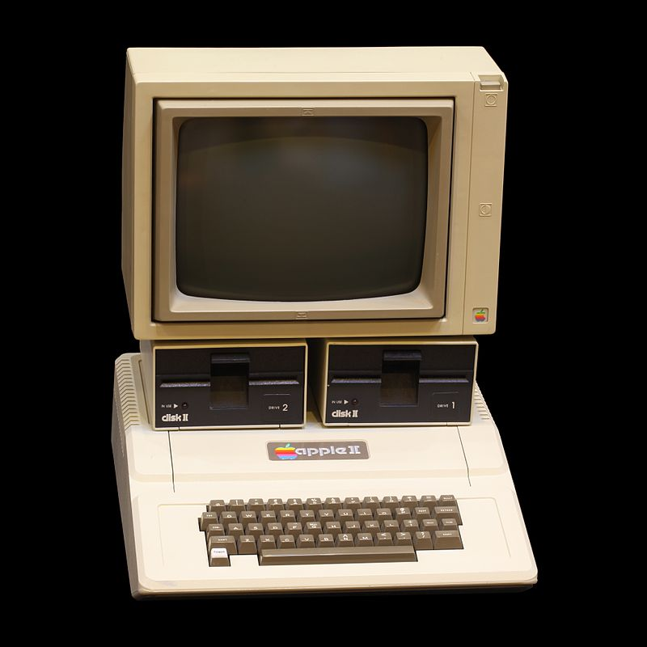

Historia de la Computación
Informática I
Décimo Grado - Sección A/B
Docente: Pablo Antonio Peña Mancia
Fecha: 2026
Válvulas de Vacío (1904)
Permitieron el desarrollo de la electrónica digital. Las computadoras de 1ra Generación las usaban, pero eran gigantes y generaban mucho calor.

El Transistor (1947)
Inició la 2da Generación. Mucho más pequeño y eficiente que las válvulas. Permitió reducir el tamaño de las computadoras drásticamente.

Circuito Integrado (1958)
3ra Generación. Jack Kilby integró cientos de transistores en una pequeña pastilla de silicio o chip.

La Era de la PC

Apple II (1977)

IBM PC (1981)